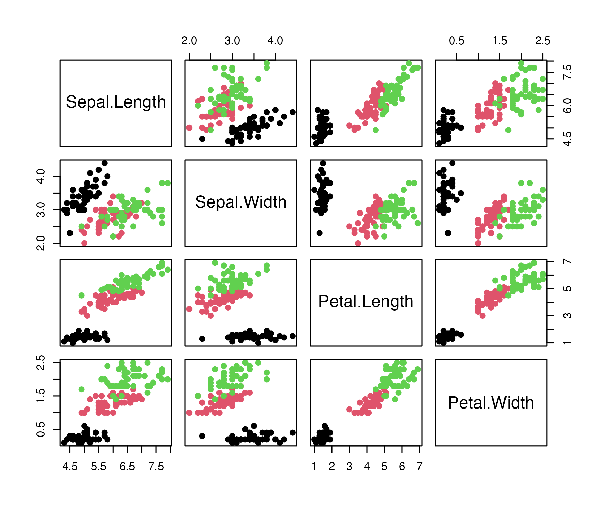

文書の作成
1 相互参照
論文やレポートでは「図1に示すように…」といった記述が必須です。Quartoでは @ラベル名 を使うことで、番号を自動管理できます。
1.1 図の参照
まずは単一の図を参照してみましょう。図 1 は、正規分布に従う乱数のヒストグラムです。
次に、複数の図を並べて参照する場合です。図 2 全体、あるいは個別の 図 2 (a) や 図 2 (b) を参照できます。
1.2 表の参照
表の参照には tbl- 接頭辞を使います。表 1 はirisデータセットの要約です。
| Sepal.Length | Sepal.Width | Petal.Length | Petal.Width | Species |
|---|---|---|---|---|
| 5.1 | 3.5 | 1.4 | 0.2 | setosa |
| 4.9 | 3.0 | 1.4 | 0.2 | setosa |
| 4.7 | 3.2 | 1.3 | 0.2 | setosa |
| 4.6 | 3.1 | 1.5 | 0.2 | setosa |
| 5.0 | 3.6 | 1.4 | 0.2 | setosa |
Markdownで記述した表も参照可能です（表 2）。
| ID | 名前 | 役割 |
|---|---|---|
| 1 | 田中太郎 | 第一書記長 |
| 2 | 佐藤花子 | 首席書記長 |
1.3 数式とセクションの参照
数式にラベルを付けることもできます。ポアソン分布の確率質量関数 式 1 は以下のように定義されます。
\[ P(X=k) = \frac{\lambda^k e^{-\lambda}}{k!} \tag{1}\]
また、冒頭の セクション 1 や、この セクション 6 自体を参照することも可能です。
2 複雑なレイアウト
2.1 タブセットパネル
コードと結果を別々のタブに分けて表示すると、スペースを節約できます。
作図に使用したコードはこちらです。
library(ggplot2)
mtcars |>
ggplot(aes(x = wt, y = mpg, color = factor(cyl))) +
geom_point(size=3) +
theme_classic()実際のプロットはこちらのタブで確認してください。

2.2 段組み
テキストと図表を左右に並べることで、雑誌のようなレイアウトが可能です。
解説
左側の段（column; カラム）には文章を配置します。右側のグラフは、データセットの相関行列を可視化したものです。このように、解説を見ながら図を確認できる配置は、プレゼンテーションやポスターで特に有効です。

3 コードへの注釈
コードの特定行に説明を加えたい場合、行末にコメントで番号を振り、リストで説明を記述できます。
library(dplyr)
iris |>
filter(Species == "setosa") |>
summarise(mean_len = mean(Sepal.Length))- 1
-
Speciesが"setosa"である行だけを抽出します。 - 2
-
ガクの長さ（
Sepal.Length）の平均値を計算します。
mean_len
1 5.0064 コールアウトブロック
読者の注意を引くための特別なブロックを作成できます。
これは補足情報です。
これは注意喚起です。データの取り扱いに注意してください。
5 参考文献の引用
外部の文献ファイル（.bib）がある場合、以下のように引用できます。
- 文芸的プログラミングの概念は Knuth (1984) によって提唱され…
lang:jaにすると (Imai and Williams 2022) でなく、 (Imai と Williams 2022)のように出力される。
6 PDF出力
YAMLヘッダーをいじるとPDFフォーマットに出力することもできます。ただし、HTML文書と見た目が同じとは限りません。細かい調整のためにはTeXの知識が不可欠です。